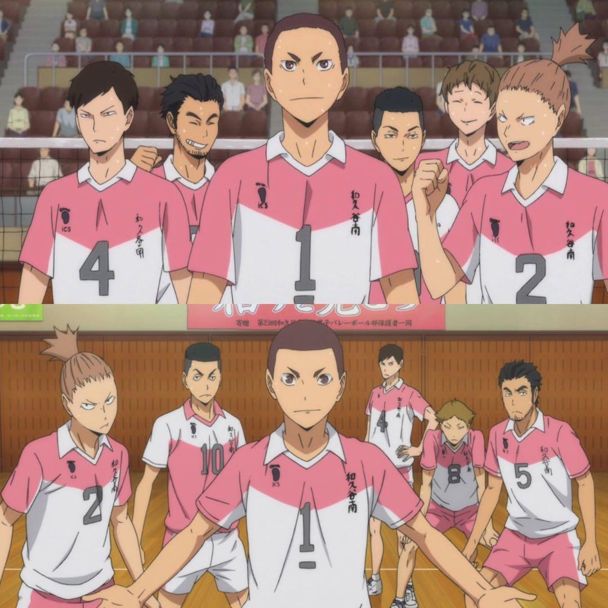
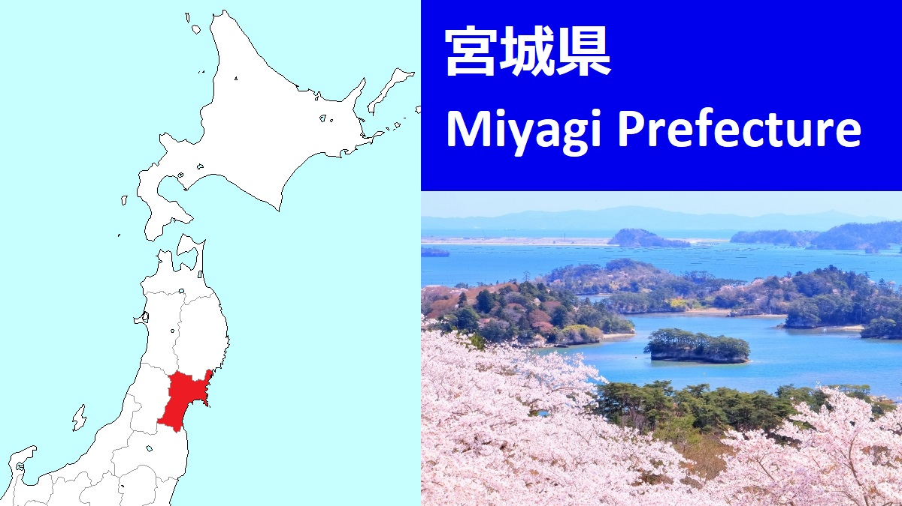

Wakutani del Sur
 
Kanji: 和久谷南高校
Romaji: Wakutani Minami Kōkō
Capitán: Takeru Nakashima
Entrenador: Masaomi Onikōbe
Colores: Blanco/Rosado (Uniforme)
Jugadores:
| Nombre | Número | Posición | Año | Estado |
|---|---|---|---|---|
| Takeru Nakashima | #1 | Capitán / Punta Receptor | 3er Año | Activo |
| Shunki Kawatabi | #2 | Punta Receptor / Opuesto | 3er Año | Activo |
| Yūki Shiroishi | #4 | Punta Receptor | 3er Año | Activo |
| Kazumasa Hanayama | #5 | Colocador | 3er Año | Activo |
| Teppei Naruko | #8 | Bloqueador Central | 3er Año | Activo |
| Kazuteru Akiu | #10 | Líbero | 2do Año | Activo |
| Tsuyoshi Matsushima | #11 | Bloqueador Central | 1er Año | Activo |